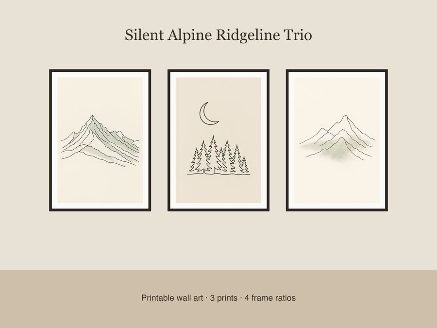

$5.99
View on EtsyBring quiet, editorial-style calm to your walls with this Silent Alpine Ridgeline Trio — a matching set of continuous-line mountain prints designed for effortless gallery-wall styling. What's included: • 3 unique designs — jagged alpine ridgeline at dawn, pine treeline silhouette beneath a crescent moon, and layered peaks with soft mist texture • Each design in 4 frame ratios (2x3, 3x4, 4x5, 11x14) = 12 print-ready JPEG files • 300 dpi for crisp, professional print quality • Warm off-white background with muted sage and charcoal line-art accents, thin-serif caption typography How to use: Download, unzip, and print at home, at a local print shop, or through an online printing service (like Printful or Walmart Photo). Choose the ratio that matches your frame size, then print and display as a cohesive triptych. Formats & sizes: 12 x JPEG files, 300 dpi, sized for 2x3, 3x4, 4x5, and 11x14 frame ratios. License: For personal use and small-business commercial use (up to 500 physical units sold). Please do not resell, share, or redistribute the digital files themselves. Honest disclosure: These designs were created by our shop with the help of AI tools as part of our design process. No physical item will be shipped — this is a digital download only.